Projects
Stationkeeping Strategies for Earth–Moon Halo Orbits
St. Xavier's College, Kolkata
Libration point dynamics in the Circular Restricted Three-Body Problem (CR3BP) have long been central to astrodynamics,
with three-dimensional halo orbits playing a key role in modern low-thrust space mission design.
These orbits are particularly interesting in the Earth-Moon system, for applications such as the ARTEMIS Lunar Gateway
due to their continuous communication benefits, better coverage of the lunar South Pole and low-cost transfer efficiency.
However, they are inherently unstable so any spacecraft orbiting on these trajectories needs robust station-keeping.
This thesis investigates the numerical computation and stability analysis of Earth–Moon halo orbits within the CR3BP
followed by strategies to control a spacecraft on these nominal orbits. Periodic halo orbits around the L1, L2 points
are generated using State Transition Matrix (STM)–based differential correction, initialized with analytical approximations.
Stability of these orbits are analyzed using monodromy matrices, and several numerical integration schemes are evaluated
for accuracy and error growth.
For station-keeping, both time-invariant and time-varying forms of continuous Linear
Quadratic Regulator (LQR) controllers are developed based on linearized error dynamics. In parallel, an impulsive Target
Point Approach (TPA) is implemented, where deviations are propagated using the STM to compute corrective velocity impulses.
The performance of these methods is assessed in the presence of perturbations in terms of position error norm and cumulative ∆V.
We have also tried to use a supervised ridge regression model using this data, to approximate control signals from state deviations.
The performance comparison of all strategies demonstrates fuel-optimal orbit tracking and also highlights the potential of
learning-assisted control for real-time applications.
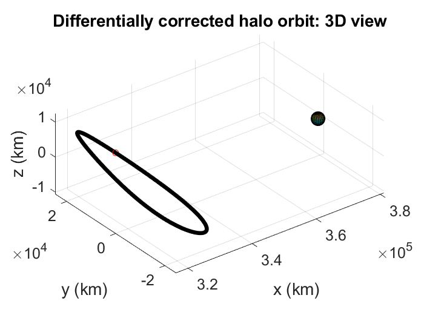
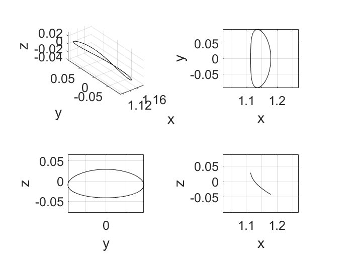
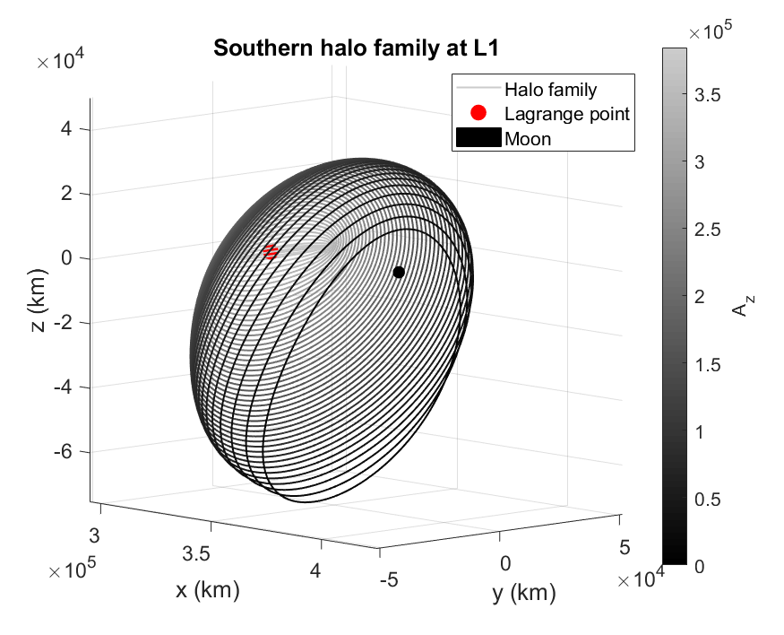
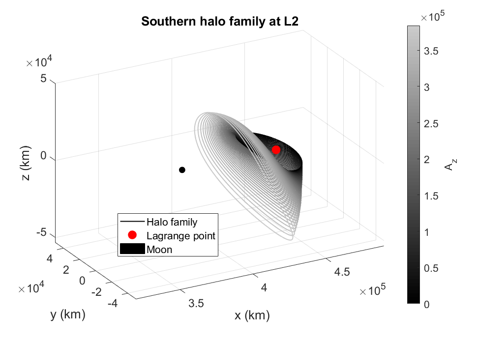
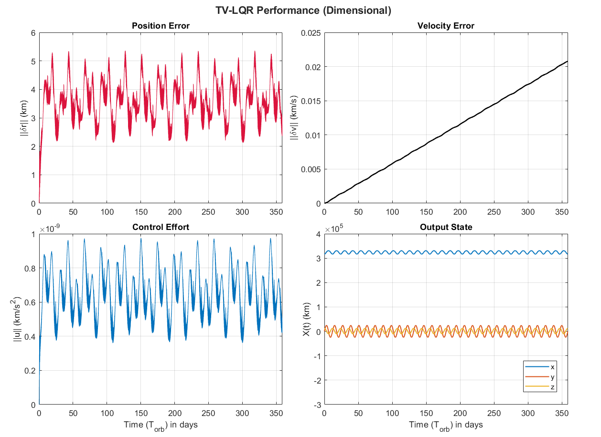
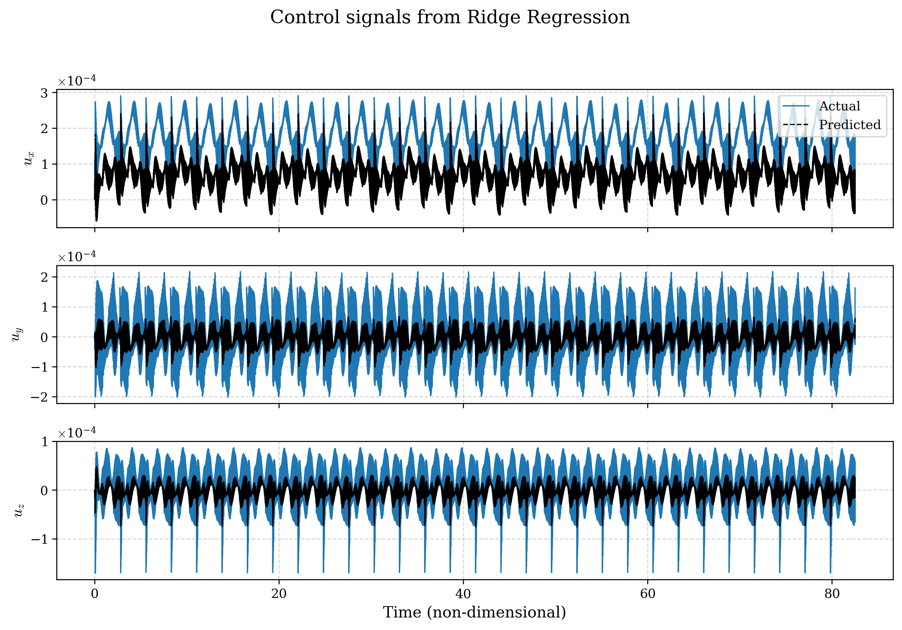
X-ray spectroscopy of bright Active Galactic Nuclei observed by NASA’s Swift X-ray telescope
CRESST II/NASA GSFC
Active Galactic Nuclei or AGNs refer to the existence of energetic phenomena in the nuclei, or central regions,
of galaxies which cannot be attributed clearly and directly to stars. They are among the most luminous persistent
sources in the universe, powered by accretion of matter onto supermassive black holes at galactic centers. Their X-ray
emission, particularly from the innermost regions near the black hole, provides critical insights into the structure
and physical processes of the accretion disk and corona.
Flux measurement is one of the most fundamental tools in
astrophysics to quantify the energy output of an astronomical source. For AGNs, measuring the amount of X-ray
energy emitted per unit area per unit time (i.e. its X-ray flux), serves as a probe of the accretion efficiency,
the dynamics of the inner accretion disk, and the physical conditions of the surrounding corona and jets. In our project,
we utilized publicly available X-ray data from NASA’s HEASARC archive to investigate the spectral properties of selected
AGN. The data were reprocessed using standard HEASoft pipelines, and spectral analysis was carried out with the XSPEC package.
By applying statistical fitting techniques to various spectral models, we extracted key parameters such as photon indices,
absorption components, and fluxes in the soft (0.3–2 keV) and hard (2–10 keV) X-ray bands.
Tracking the variability of the flux values over time provides insights into variable accretion rates, the disk dynamics
as well as the size and dynamics of the emitting regions near the black hole. Through our study, we aim to understand
the physical mechanisms behind the X-ray and radio emission from the centers of active galaxies.
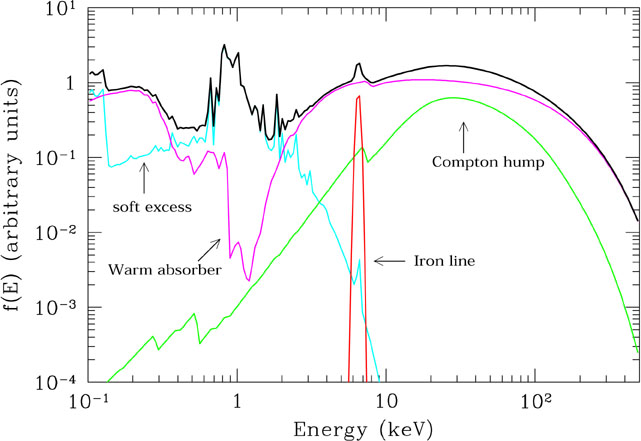
Design of a delta-wing aircraft with Leading-Edge Root Extension
Indian Institute of Technology, Kanpur
This report encapsulates the tasks I was assigned during my internship, primarily the design and development of a delta wing model using SolidWorks with a Leading-edge root extension (LERX attachment) on the main wing. Leading-Edge Extensions (LEX) are aerodynamic features added to the front of an aircraft’s wing, particularly delta wings, to improve their performance by modifying the airflow over the wing. This extension can have a profound effect on the behavior of vortices over delta wings, which are crucial for lift generation and maneuverability, especially at high angles of attack. The internship also includes learning small scale experiments like smoke flow visualisation of vortices over delta wings, using a force balance for measuring aerodynamic forces and moments as well as load measurement and performing structural analysis on Solidworks to understand stress, strain and deformation on the LERX.
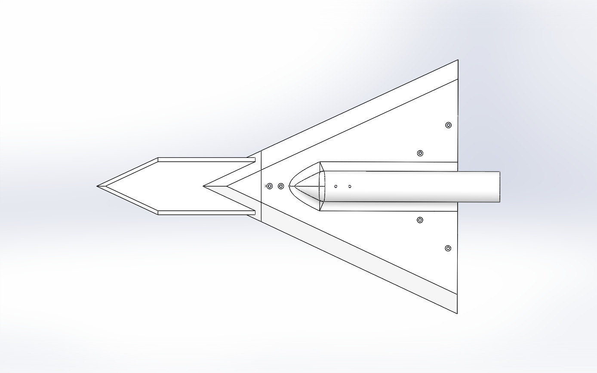
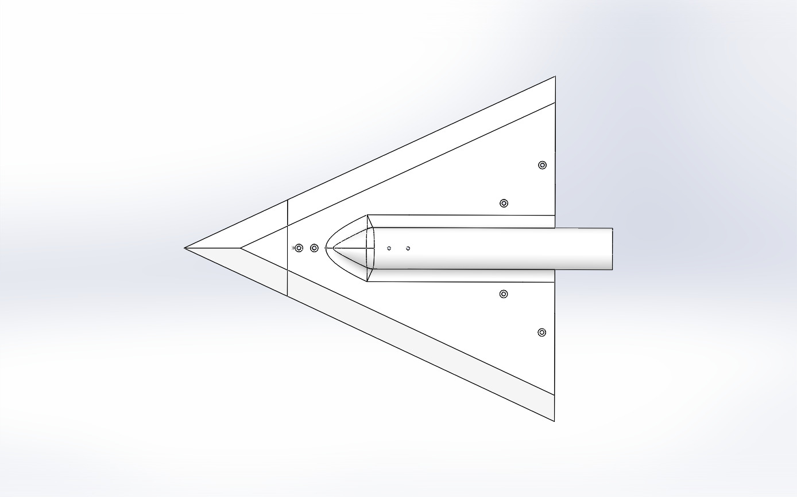
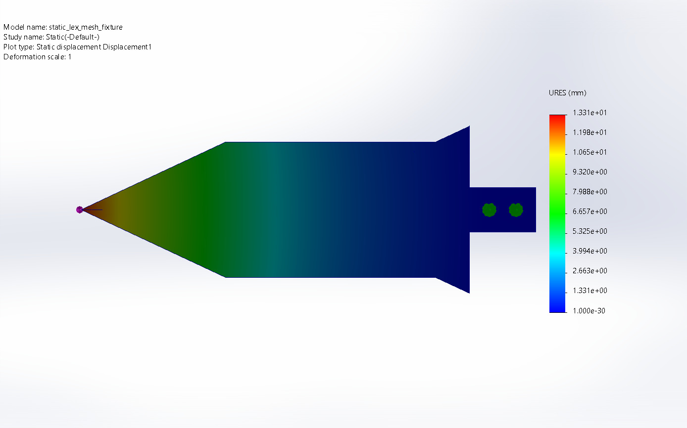
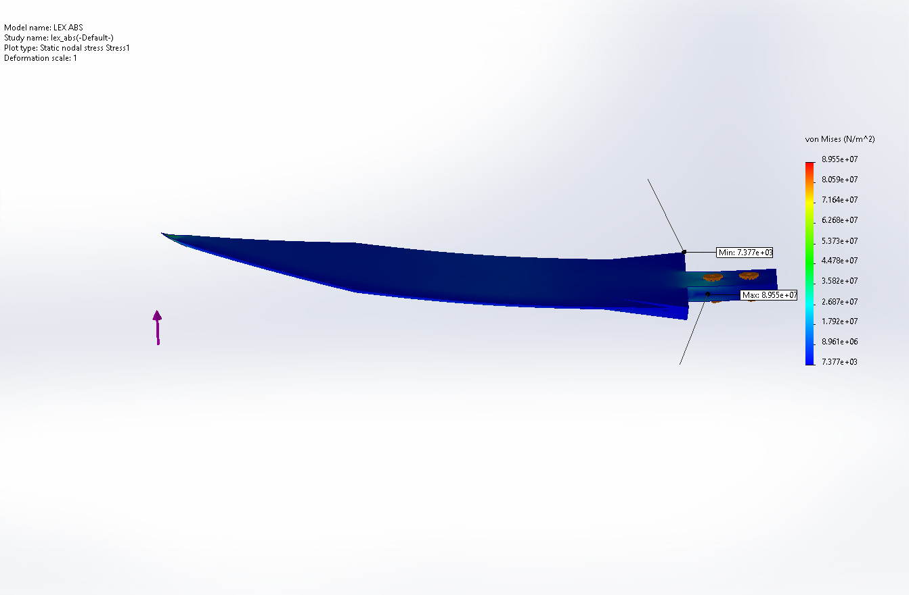
Dynamics of Accretion: Viscid and Inviscid Flows
St. Xavier's College, Kolkata
The theory of accretion discs is one of the most important applications of Fluid Dynamics in Astrophysics. This dissertation delves into the fundamental principles of fluid dynamics as applied to accretion theory and its significance in explaining the dynamics of mass transfer in the astrophysical context. Understanding the process and its stability is essential to explain the behaviour of many astrophysical objects like AGNs and X-ray binaries. We build up the equations of gas dynamics, look into the inviscid and viscid nature of accretion, examine the mechanisms behind the accretion process - mainly angular momentum and energy transfer. We first develop the Navier-Stokes equation. Subsequently, to understand the nature of viscosity, we focus on the Shakura-Sunyaev standard viscosity model and examination of disc approximations thereby simulating the viscous flow in an accretion disc.
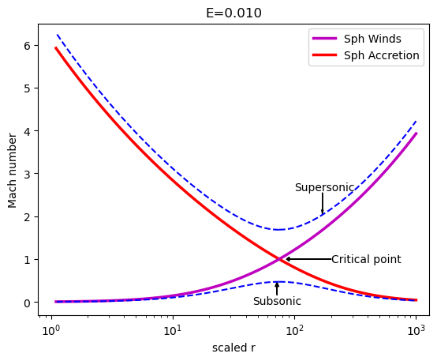
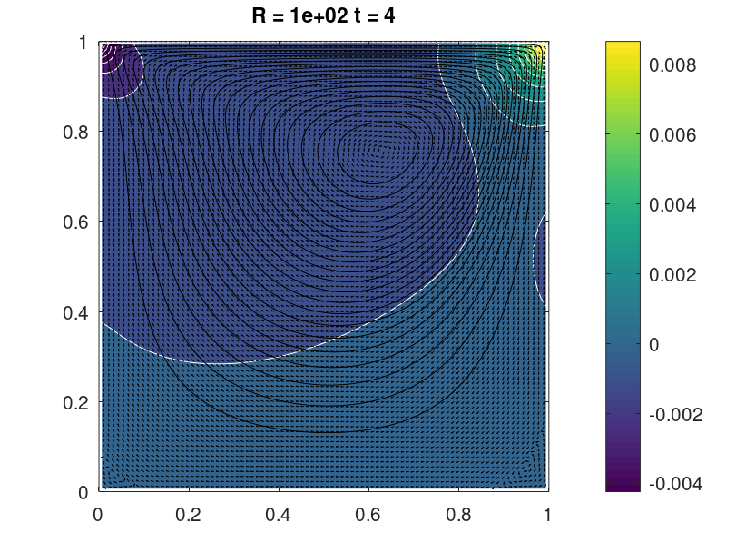
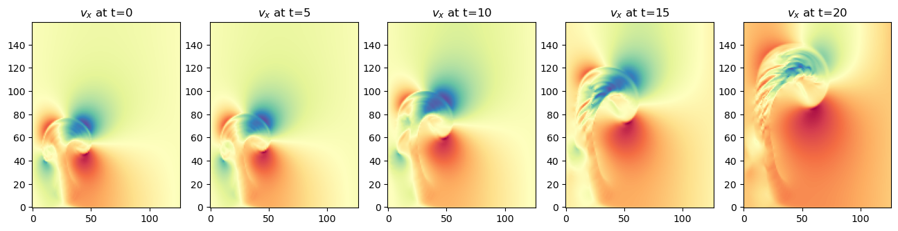
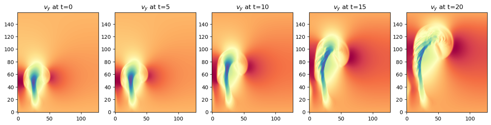
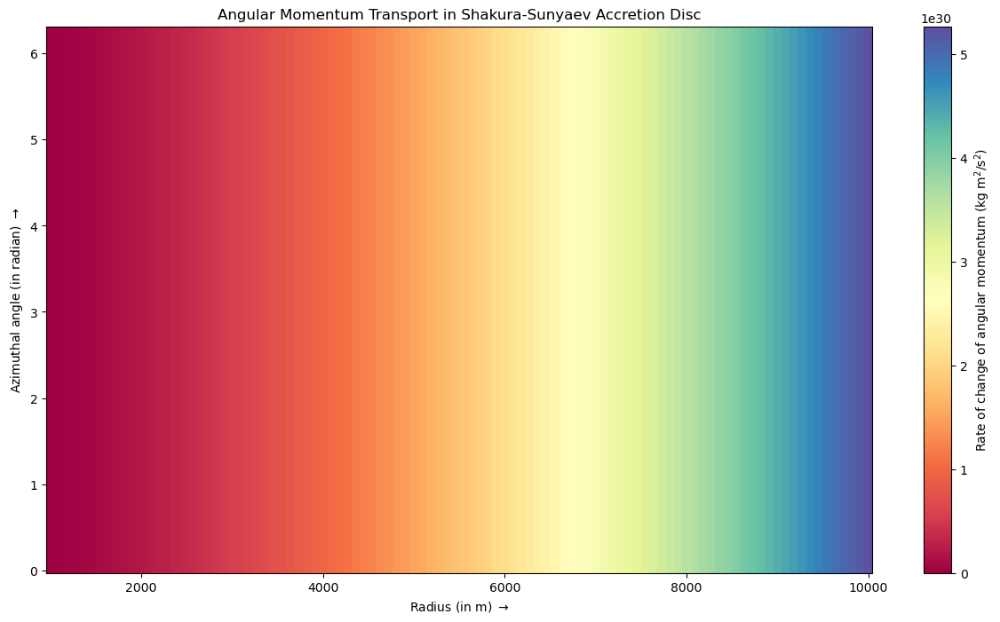